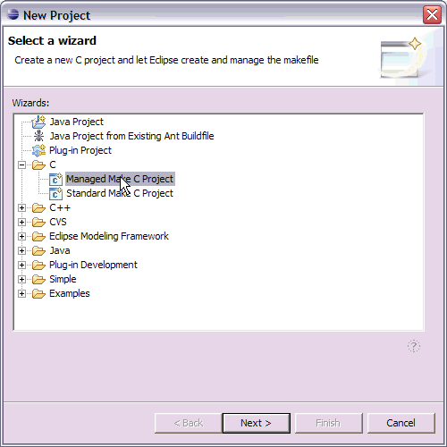
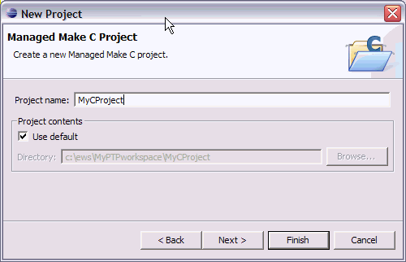
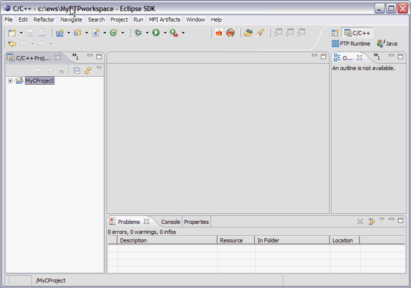
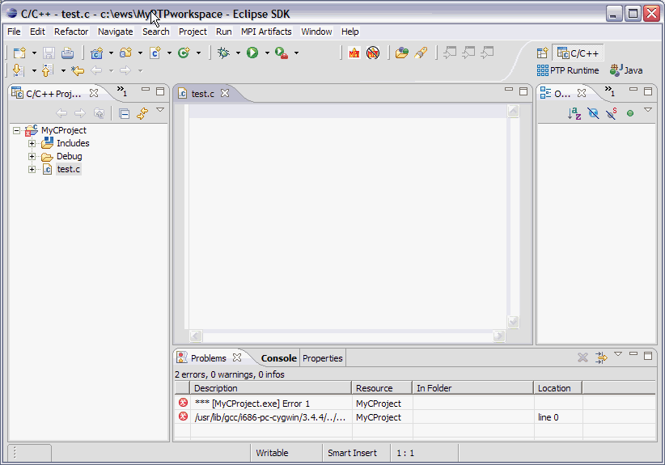
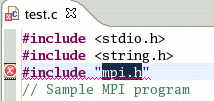
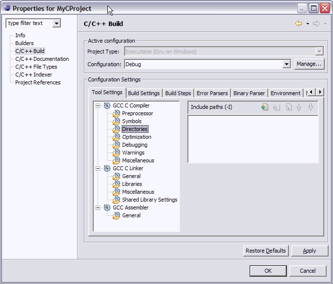
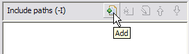
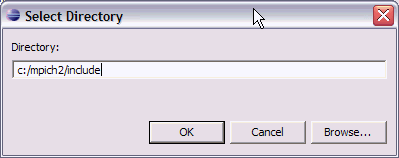
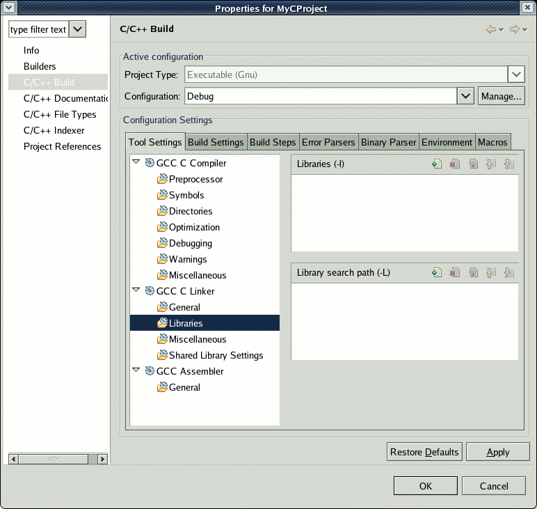
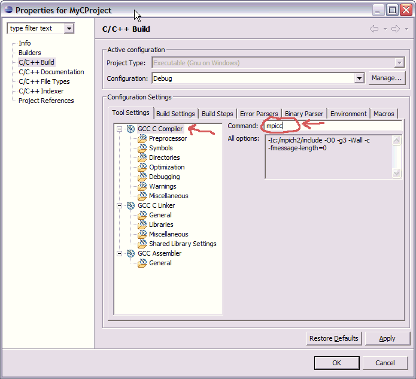

Type a name for the source file, e.g. "test.c"

Click Finish.
Topics include:
To create a new MPI project in C using the managed build facility,
Select File -> New -> Project ... The New Project dialog opens.
Select C -> Managed Make C Project.
Note: for automatic setup of MPI project information,
see the PTP PLDT (Parallel Language Development Tools) help.

Click Next.
Type the name of your project, e.g. MyCProject

Click Finish.
A dialog prompts you to switch to the C/C++ Perspective. Hit OK. The C/C++ Perspective appears.
Your new project is shown in the C/C++ Projects view.

Now create a source file.
Click File -> New -> Source File.
Type a name for the source file, e.g. "test.c"
Click Finish.
A new editor appears, in which you can enter your program.

Since this is a managed build project, Eclipse creates a makefile
and tries to build with the new file. Since the file is empty,
you will see errors in the Problems view, and in the Console view.

Enter a program in the editor. (If you have the PTP PLDT installed, a sample program is available in the PTP MPI tools help, available as: testMPI.c)
A sample "hello world" type MPI program is also a good first test program:
#include <stdio.h>
#include <mpi.h>
int main(int argc, char *argv[]) {
int rank;
MPI_Init(&argc, &argv);
MPI_Comm_rank(MPI_COMM_WORLD, &rank);
printf(“my rank=%d\n”, rank);
MPI_Finalize();
return 0;
}
Save your program. The program will be compiled automatically by the managed build system.
You may see several errors, if you haven't set up the
MPI information for your project.
The first error may be that an include file isn't found.

(If you hover the mouse cursor over the red "X"
you will see the reason for the error)
In order to locate needed include files, bring up the Project Properties on this C/C++ project.
To bring up the Project Properties dialog,
activate the context menu on the Project, and select "Properties."

The project properties window is displayed for this C project.
Select "C/C++ Build" on the left, and under "Configuration settings"
on the "Tool Settings" tab, select "Directories" under "GCC Compiler."
This lists the Include paths used to build the project, which are now
empty.

To add an include path, click the add button for Include Paths.

Then enter or browse to find the location of the MPI includes, and
select "OK."

Now you also need to add the path to the library: Under GCC Linker,
Libraries, select the add button for "Libraries (-l)"

For the library value, enter 'mpi' and select 'OK'

Then select the add button for "Library Search Path (-L)"
and enter the path to the lib directory. Select 'OK'

Now select "OK" in the project properties dialog to close this dialog. Now your project should rebuild without errors relating to finding the include files.
Now specify the build/link command.
Again in Project properties, C/C++ build page, Tool Settings tab,
click on "GCC C compiler"
and change the default "gcc" value to "mpicc"
(or whatever the build command is for your MPI environment).

Then do the same for the "GCC C Linker."

Now proceed to launch the parallel program.